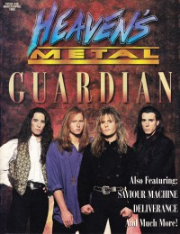

Heaven's Metal, Mar / Apr 1993, #40
| Cover |
|---|
|  |
| Writers in this Issue |
| Bach, David Beeman, Bob Breise, Camille Brown II, Jimmy P. Jenison, David A. Kidd, P. G. Lott, Jeff Scheetz, Jeff Van Pelt, Doug |
Guardian
Cover Feature:- "Guardian Passes The Ten Year Milestone" by David A. Jenison
- "Behind The Mask of Saviour Machine"
- "Getting Serious With Deliverance"
- "Discovering Veni Domine"
- "Living With Die Happy" by David A. Jenison
- "XL & DBD In America" by David A. Jenison
- Living Colour by Doug Van Pelt
- Die Happy - Volume 2 by David A. Jenison
- Jesus Freaks - Socially Unacceptable by Doug Van Pelt
- Guardian - Miracle Mile by Doug Van Pelt
- Randy Rose - Healing by Doug Van Pelt
- Deliverance - Intense Live Series, Vol. 1 by Doug Van Pelt
- XL & DBD - Sodom and America by David A. Jenison
- Mortal - Fathom by Doug Van Pelt
- Brainchild - Mindwarp by David A. Jenison
- Godsent Humans - Liberty or Death by P. G. Kidd
- Glenn Kaiser, Darrell Mansfield - Slow Burn by P. G. Kidd
- Tony Rossi Band - TRB by Doug Van Pelt
- various artists - All Hail The Power by Doug Van Pelt
- The Moshketeers - The Moshketeers by Doug Van Pelt
- True Repentance - demo by Doug Van Pelt
- Purin Heart - Purin Heart by P. G. Kidd
- Seventh Avenue - First Strike by Camille Breise
- Prophecy (CA) - demo by Camille Breise
- Oracle (NC) - Selah by Jeff Lott
- various artists - Crusade Compilation by Jeff Lott
- Eternity - One Minute to Destruction by Jeff Lott
- Vital Iron - Warriors Sign of Victory by Jeff Lott
- No Compromise - demo by Jeff Lott
- Cornerstone - Dust by Jeff Lott
- Out From Under - Out From Under by Jeff Lott
- Teflon Brain - Deeply Symbolic by Jeff Lott
- Azzan - demo by Jeff Lott
- Double Edge - A Double Shot of Double Edge by Jeff Lott
- Final Daze - Golgotha by Jeff Lott
- Dominyon - Dominyon by Doug Van Pelt
- Soulkeeper - When Will You See by Doug Van Pelt
- Allegiance (IL) - Allegiance by Doug Van Pelt
- Zoe (WV) - 3-song demo by Jeff Lott
- Hold True - Fade by Doug Van Pelt
- Eternal Destiny - Eternal Destiny by Doug Van Pelt
- Robin Crow - Electric Cinema by Doug Van Pelt
Pastor Bob by Pastor Bob
Inside / Outside by David Bach
Poster:
- Saviour Machine by Jeff Scheetz
HM Back Page: "Pain"
Relevant Links
For more information about HM visit .You may be able to find HM in a library near you: Worldcat

© 2011 CMnexus. Last updated September 2019. Contact: editor -AT- cmnexus -DØT- org About